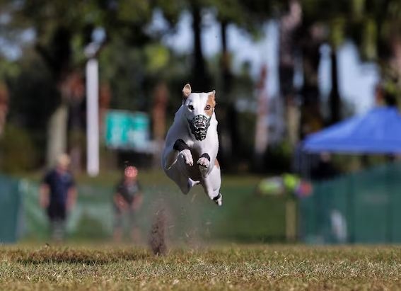

NATIONAL GEOGRAPHIC
Andalusia’s ‘white towns’ were forged by past epidemics
TRAVEL
Whitewashed villages teeter on hilltops throughout the countryside of Andalusia, Spain, but the pueblos blancos share more than beautiful architecture. They were built to defend communities against invaders during centuries of conflict.
Today the conflict is past but community remains: A pueblo blanco named Algar recently began a campaign for a local tradition they call charlas al fresco, or “fresh air chats” to be recognized on the UNESCO World Heritage Intangible List. The honorific recognizes the importance of beliefs, customs, and skills such as dancing, food preparation, and crafts intrinsic to specific cultures and places.
“We all bring chairs into the street to spend time with our friends and neighbors. It’s been happening as long as anyone can remember,” says Algar mayor José Carlos Sánchez, who was born and raised in this Andalusian community of just 1,442 people. “It’s a special thing, to see people old and young sitting out in the street together.”
That long-running, communal discussion has the power to bridge social and political divides and brings the community together to share news, says the mayor, who launched the UNESCO bid last summer. When the pandemic allowed, residents donned their masks and kept the conversations going.
Still, fewer and fewer people are joining in the street-side socializing in the evenings drawn, instead, to online platforms, says Sánchez. A road trip through Andalusia’s pueblos blancos not only reveals a land once caught between medieval warring kingdoms but also a way of life threatened by rapidly changing social norms.
Among the white villages of Andalusia
Algar is one of 19 pueblos blancos in this southernmost region of Spain. In the late Middle Ages, these towns formed a contested borderland.
To the north were Christian kings, eager to reconquer the Iberian Peninsula. They faced off against the Islamic Emirate of Granada, a Moorish kingdom ruled from the magnificent Alhambra Palace.
The emirate surrendered to Christian forces in 1492, but Arabic-speaking Moors left their architectural legacy etched across this landscape. In the Islamic era the villages had likely begun to acquire their distinctive hue, says Eduardo Mosquera Adell, who studies historic architecture at the University of Seville, noting that 14th-century Andalusian-Arab scholar Ibn Khaldun described a method for making whitewash, or cal, from slaked lime.
Road-tripping the pueblos blancos
Today, the white villages of Andalusia are also a point of cultural pride. Traditional production of Andalusian whitewash was itself given UNESCO status in 2011, and southwest of Seville the Museo de Cal de Morón demonstrates the artisanal process for visitors.
“That type of recognition can raise awareness of the community’s shared heritage,” says anthropologist Gema Carrera Díaz, director of the Atlas of the Andalusian Immaterial Heritage. While industrial paint has largely supplanted cal in Andalusia, Carrera says the UNESCO designation helped spur a revival. “It’s really important from an educational perspective.”
To see just how spectacular the white villages can be, rent a car and head for the hills. Linked by a tangle of narrow mountain roads, Andalusia’s pueblos blancos invite leisurely road trips that reveal the traditional ways of life that have persevered here.
The future of ‘charlas al fresco’ in Algar
That custom is not unique to Algar, Carrera cautions. “It’s a tradition that you see in many parts of Andalusia and across the Mediterranean,” she says. “The summers are very warm, so people always went outside to cool off, and cultures here have placed a lot of value in socializing.”
But when it comes to preserving heritage, Carrera says, customs don’t need to be singular to be worthy of recognition. It’s more significant that they’re representative, which this one is. And for a village like Algar, even the process of seeking UNESCO status might help sustain a traditional way of life. It can spark conversations about shared values, and which customs must be safeguarded in years to come.
Comments :
- john Very good
- john Very good
Leave a Reply
Your email address will not be published. Required fields are marked*
Related posts:
-
Reas the whippet named America’s fastest dog, breaks last year’s record
ORLANDO, FLORIDAReas, a male white-and-blonde whippet, bolted ahead of the competition to win the second-annual Fastest Dog USA competition.
View article -
 Some dogs are geniuses just like humans
Some dogs are geniuses just like humansBut some dogs are exceptional. Take Chaser, an American border collie dubbed the “smartest dog in the world,” who could recognize and remember 1,022 nouns one for each of her toys.
View article -
 If you’re chronically stressed, your dog could be too
If you’re chronically stressed, your dog could be too“Dogs are quite good at understanding humans,” says senior author Lina Roth, a zoologist at Sweden’s Linkoping University. “They’re definitely better at understanding us than we are at understanding them.”
View article